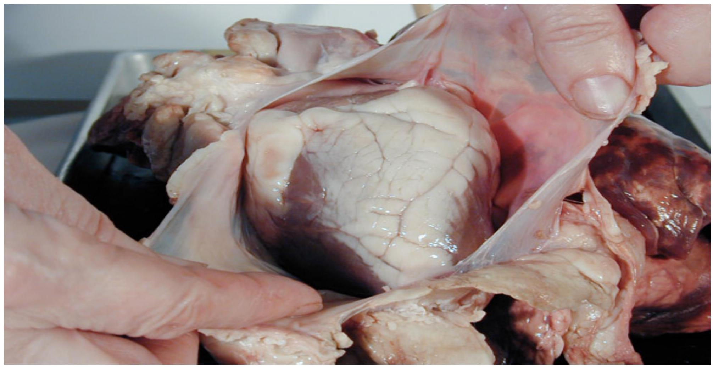
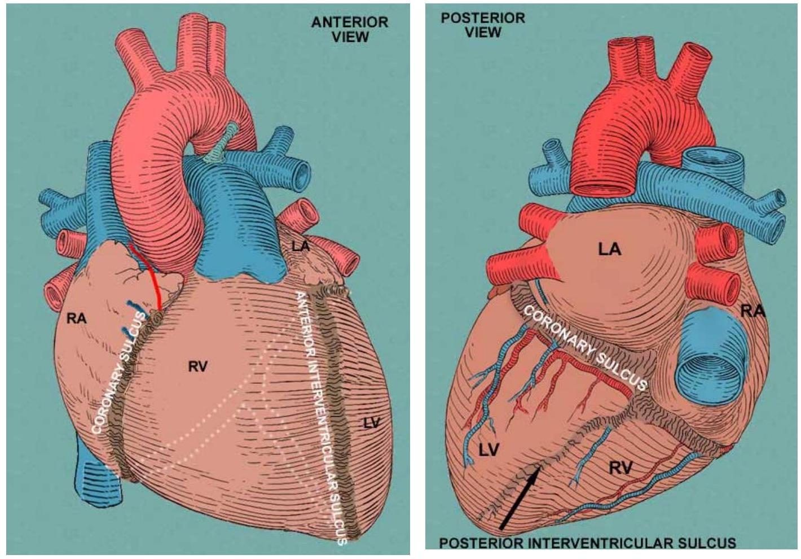
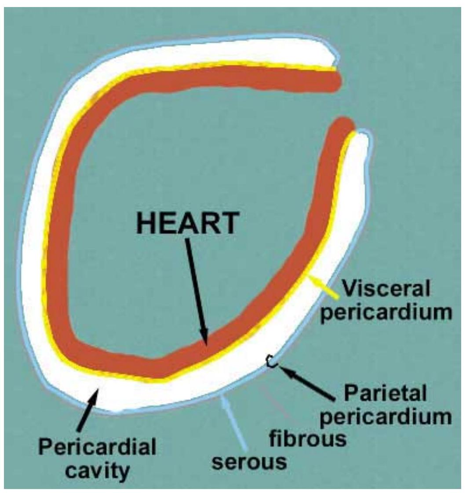
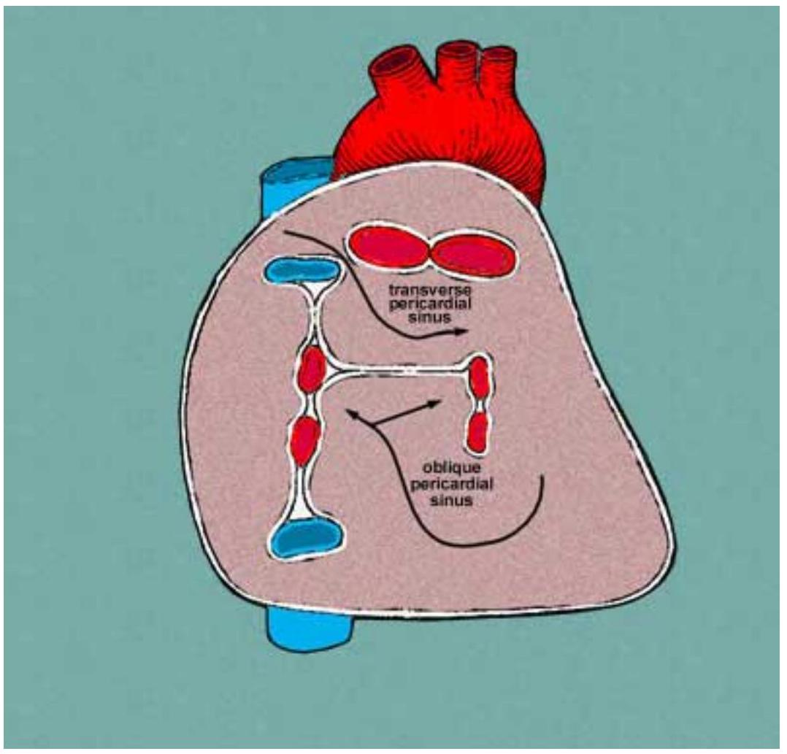
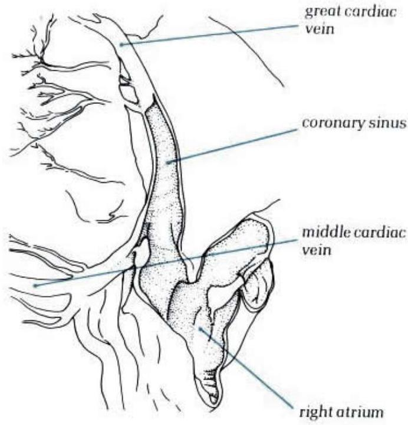
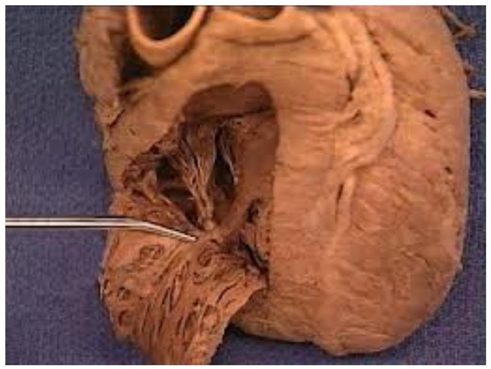
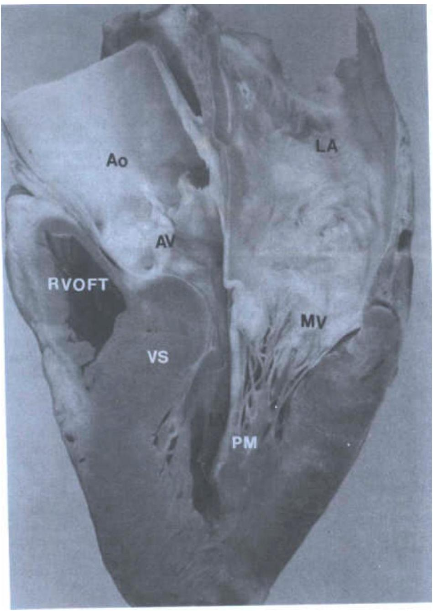
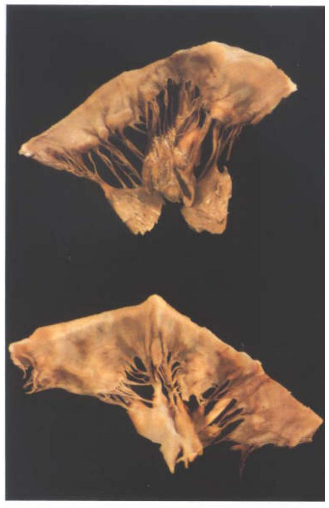
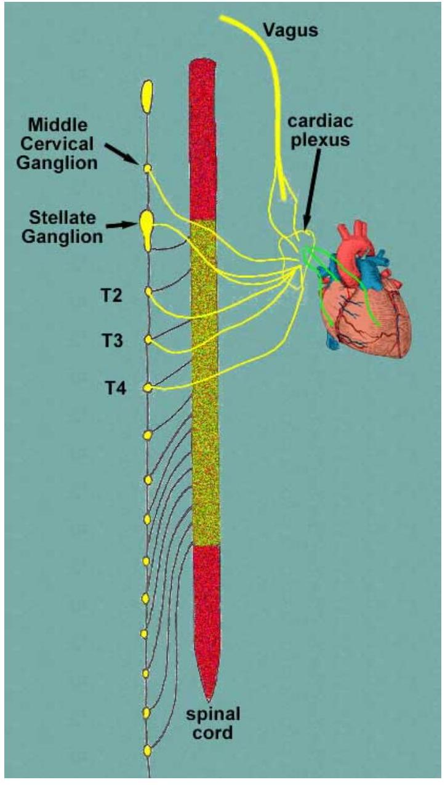
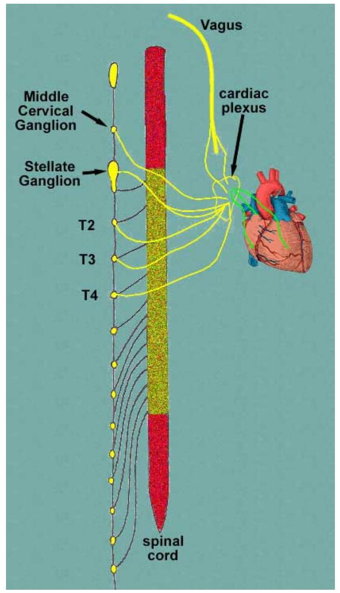

CLINICAL ANATOMY: HEART.
CLINICAL ANATOMY: HEART.
Lecture notes
By
Dr Paul Odula
BSc(Anat), MBChB(Uon), MMed(Muk), FCS(ECSA),
Phd.
HEART.
- Muscular organ found in the Middle mediastinum.
-
Enclosed in the pericardial sac.

Surface markings

Introduction.
- Introduction
- Exterior
- surfaces
- borders
- grooves or sulci.
- Interior
- Heart chambers
- Heart valves
- Subvalvular apparatus
-
Conducting system

Pericardium.
- The parietal and visceral pericardium are continuous
-
This continuity takes place at the points where the major blood vessels enter and leave the heart.

Pericardium innervation.
- Fibrous- phrenic nerve
- Serous-parietal- phrenic nerve
-
visceralautonomic innervation vagus nerve.

External surface
- Description: number of surfaces, borders and grooves or sulci.
- Dimensions:
- base to apex $10-11 \mathrm{~cm}$
- transversely $7-10 \mathrm{~cm}$
- AP 6cm
-
On average, male hearts are heavier than female
 hearts: 300g compared to 250g.
hearts: 300g compared to 250g.
Surfaces.

- Diaphragmatic surfaceventricles.
- It rests on the fibrous part of the diaphragm.
- The left atrium -base of the heart.
- In supination, the heart rests on its base and the apex projects up and to the left.
superior
The heart viewed from above showing how the atrial appendages
encircle the roots of the great arteries (Left atrial appendage; aorta; pulmonary trunk; right atrial appendage)
Right posterior
The heart viewed posteriorly and from the right showing the groove between the
pulmonary veins and right atrium: sulcus terminalis, 'Waterston's groove',


Posterior.
The heart viewed from behind and oriented in its in situ position.
The position of the coronary sinus is shown

in the left
artioventricular groove between the left atrium and the left ventricle.
Cardiac wall.

Chambers.
-
Right & left atria

- Right &left ventricles.
Right atrium
- Features:
- Sinus venarum
- Sulcus terminalis
- Junction between the two is marked by a well-formed muscle bundle, the crista terminalis
The trabeculae tend to run at right angles to the crista.
Right ventricle
Trabecular zone is suspended like a piece of washing from the washing line made up of the inlet and outlet components.
Ventricular wall
the rough lining of the ventricular wall is called trabeculae carneae, because of their meaty appearance
the anterior papillary that has an attachment to the interventricular wall known as the
 septomarginal trabecula or the moderator band
Interventricular Septum.
Thick wall separating the ventricles of the heart from one another.
The ventricular septum is directed backward and to the right, and is curved toward the right ventricle

-
Atrioventricular membranous septumbetween the aorta and the right atrium.

Valves Intro
Valves. Atrio-ventriculartricuspid & mitral valves Semilunar-aortic & pulmonary trunk valves

Mitral valve.
- Resembles a mitre's hat.
- Also bicuspid/ left atrioventricular valve.
- Has anteromedial & posterolateral cusps.
- Mitral valve prolapse - mitral valve syndrome.
- Mitral valve regurgitation- incompetence.
- Mitral valve stenosis.
Tricuspid valve.
- Right atrioventricular valve
- Has 3 cusps
- The cusps held by chorda tendinae to its 3 papillary muscles.
- Number of cusps could change during one's lifetime.
-
Not commonly affected by regurgitation.

Semilunar valves
-
Aortic & pulmonary semilunar nerves.

Aortic valve.
- Left ventricle to aorta.
-
Has 3 cusps- posterior, right &left valves. other.

Other valves:, eustachian thebesian
Surface markings for valves.
| Valve | Sternocostal projection | Point of auscultation |
|---|---|---|
| Pulmonic | left sternal border, 3rd rib | 2nd, left IC space, just lateral to sternal angle |
| Aortic | left sternal border, 3rd IC space | 2nd right IC space, just lateral to sternal angle |
| Mitral | left sternal border, 4th rib | 5th, left IC space, 8 cm lateral to midline |
| Tricuspid | midsternal, 4th IC space | 4th, left IC space, just lateral to sternum |
Innervation :heart
- Innervation throughtthe cardiac plexus.
-
Formed by vagus nerve & sympathetic fibres fro the middle cervical ganglion and stellate ganglion.
 - Vagus- slows down the heart & reduces the stroke volume.
-
Sympathetic stimulation- increases the heart rate and the stroke volume as well.

Conducting system.

Heart's internal nervous system. Made up of 3 parts:
- The sinoatrial (SA) node at the junction of the superior vena cava with the right atrium.
-
The atrioventricular (AV) node located on the lower part of the interatrial septum near the opening of the coronary sinus close to

- The AV bundle (His) splits over the upper part of the interventricular septum into a left bundle branch (LBB) and a right bundle branch (RBB).
Blood supply.
- Arterial - right coronary
- left coronary
- 3rd coronary of Beda
middle cardiac small cardiac oblique vein of Marshall
- Venous- great cardiac
- middle cardiac
- small cardiac
- oblique vein of Marshall
CLINICAL ASPECTS.
- 3rd coronary (Olabu et al 2006):
- present in $45 \%$ of the population.
- From right aortic sinus
- Source of collateral supply- anastomose with the anterior interventricular.
3rd coronary.
- Mitral valve& subvalvular apparatus (Gatonga et al 2008)
- The valve architecture and the support system
- Mitral valve prolapse.
Mitral valve prolapse.

- Coronary sinus (Ominde et al 2011)
- Important in catheterization.
- Thus knowledge in variant anatomy is key.
- Thebesian valve.
Coronary sinus.

- Left anterior descending- LAD (Kilonzi et al 2008)
- Anterior interventricular artery.
- Most common site of coronary artery disease (CAD).
- Atriopulmonary junction (Poonamjeet et al 2012).
- Entry of the pulmonary veins into the left atrium.
- Basis for the occurrence of cardiac arrhythmias.
- Atrioventricular annuli (Hemed et al 2010)
- Annuli support the valves
- Atrioventricular valve failures.
- Valve failures more common in females.
AV annuli.

- Stents surgery.
- Tube insertion into the coronary arteries.
- Keeps the open
- In CAD
- Reduces the angina.
Coronary stent.

Stent surgery.
- Pericardial stripping
- Pericardiectomy
- Done following pericarditis.
- Entire pericardium peeled of the heart surface to allow expansion.
- Coronary artery bypass
- surgical procedure involving grafting of vessels.
- Enables bypassing of the stenosed/blocked section.
- Grafts taken from other vessels: GSV
- Treatment of CAD.
Coronary bypass.

Angina pectoris
- Chest pain
- Due to spasm/ obstruction of coronary vesselsinadequate blood supply to myocardium.
- Referred to the arm. Basis?
- Cardiac tamponade.
- increased fluid in pericardial space
- Compresses the atria- esp right
- Reduced venous return.
- Pericardial percutaneous aspiration done.
THANK YOU!